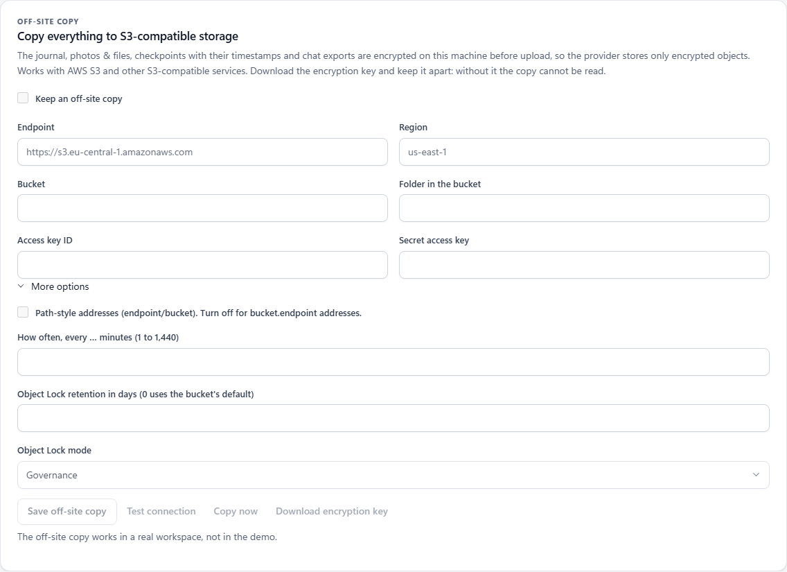

문서 / 04
내보내기 및 검증
다른 사람이 확인할 수 있는 서명된 기록을 공유하세요.
서명과 체크포인트가 처음이신가요? 샘플 기록을 변경해 보고 어떤 검사가 이를 감지하는지 확인해 보세요.
수집 담당자와는 별도로 사본을 보관하고 싶으신가요? S3 설정, 오브젝트 잠금 또는 검증된 복구 기능을 확인해 보세요.
신뢰할 수 있는 참고 자료로 활용
컬렉터 외부에 워크스페이스의 공개 키 지문을 저장하십시오. 수집 중에는 서명된 체크포인트를 다른 곳에 보관하거나 독립적인 증인을 활용하십시오. 이러한 참조 정보를 통해 수신자는 키와 이전 저널 경계를 확인할 수 있습니다.
서명된 ZIP 파일 다운로드
‘내보내기’를 열어 서명된 증거 ZIP 파일을 생성하십시오. 여기에는 작업 공간 저널과 서명된 파일 매니페스트가 포함됩니다. 패널 필터는 이 전체 저널 내보내기를 제한하지 않으므로, 공유하기 전에 내용을 검토하십시오.
독립 실행형 HTML 및 CSV 파일을 다운로드하면 내용을 읽고 분석하는 데 유용합니다. 검증 가능한 원본 자료로는 서명된 ZIP 파일을 보관하십시오. 별도로 제공되는 HTML 또는 CSV 파일에는 독립적인 서명이 포함되어 있지 않습니다.
신뢰할 수 있는 TgWitness 사본을 통해 확인해 보세요.
설치된 프로젝트 환경에서 예시 지문 및 파일 경로를 다음과 같이 변경하십시오:
python -m tgwitness.verify evidence.zip --fingerprint TRUSTED_PUBLIC_KEY_SHA256 --checkpoint retained-checkpoint.json두 참조 모두 검증을 통과하면 결과 보고서에 key_pinned: true와 checkpoint_checked: true가 표시됩니다. 검증 결과를 원본 아카이브와 함께 보관하십시오. 보관된 체크포인트는 내보내기 경계를 포함하거나 그 이전이어야 합니다.
결과 이해하기
- 무결성: 기록된 내역과 내보낸 파일은 해당 서명과 일치합니다.
- 앞서 언급한 바와 같이, 외부 체크포인트를 통해 내보낸 데이터를 이전에 보관된 저널 접두사와 비교할 수 있습니다.
- 실행 방법: 제어된 전송 → 편집 → 삭제 테스트를 통해 캡처된 기록과 특정 이벤트를 대조하여 확인합니다.
유효한 서명이 있다고 해서 모든 텔레그램 이벤트가 수신되었음을, 발신자가 진실을 말했음을, 또는 수집자의 시계가 정확했음을 증명하는 것은 아닙니다.
S3 오프사이트 백업 설정
실행 중인 작업 공간에서 [Exports] → [Off-site copy]를 엽니다. 이 선택적 기능은 AWS S3 및 기타 S3 호환 서비스와 연동됩니다. 이 기능은 저널 세그먼트, 보존된 사진 및 파일, 타임스탬프 응답이 포함된 체크포인트, 완료된 채팅 내보내기 파일을 복사합니다. 모든 객체는 업로드 전에 수집기에서 AES-256-GCM를 사용하여 암호화됩니다.
온라인 데모에서는 업로드 기능이 비활성화된 상태에서 동일한 제어 기능을 보여줍니다. 저장소 인증 정보는 본인이 직접 실행 중인 작업 공간에서만 입력하십시오.


| 분야 | 입력할 내용 |
|---|---|
| 엔드포인트 | 버킷 경로나 인증 정보가 포함되지 않은 저장 서비스 URL. 가상의 예시: https://s3.example.invalid. |
| 지역 | 통신사가 요구하는 지역 코드입니다. 애플리케이션의 기본값은 us-east-1입니다. |
| 버킷 | 접근 가능한 기존 버킷. 가상의 예시: example-case-backup. |
| 버킷 내 폴더 | 객체 접두사; 기본값은 tgwitness입니다. 애플리케이션은 이 작업 공간의 서명 키 지문에서 파생된 접두사를 추가합니다. |
| 액세스 키 ID / 비밀 액세스 키 | 저장소 인증 정보를 모두 함께 입력하십시오. 이 정보는 워크스페이스 볼트에 저장됩니다. 저장된 인증 정보 쌍을 유지하려면 이후 저장 시 두 항목 모두 비워 두십시오. |
| 경로 형식 주소 | 서비스 제공업체에 따라, 기능이 활성화된 경우 ‘endpoint/bucket’를, 비활성화된 경우 ‘bucket.endpoint’를 사용하십시오. |
| 복사 간격 | 1분에서 1,440분까지 설정 가능하며, 기본값은 5분입니다. 예약된 백업을 수행하려면 애플리케이션이 실행 중이어야 합니다. |
| Object Lock 보존 | Object Lock을 지원하는 버킷의 보존 기간 및 모드. 보존 기간을 0일로 설정하면 버킷의 기본 보존 설정이 적용됩니다. |
- 대상 위치와 인증 정보를 입력하세요. 준비 단계에서는 ‘오프사이트 사본 보관’ 항목의 체크를 해제한 상태로 두었다가, 준비가 완료되면 ‘오프사이트 사본 저장’을 선택하세요.
- '연결 테스트'를 선택하세요. 그러면 암호화된 테스트 객체가 업로드되고 저장소의 응답이 확인됩니다.
- '암호화 키 다운로드'를 선택하십시오. 해당 파일은 복구 시 필요하므로 수집기와는 별도로 보관하십시오.
- '오프사이트 사본 보관' 확인란을 선택하고 다시 저장하십시오. 수동 처리를 원하면 '지금 복사'를 선택하거나, 예약된 일정을 그대로 실행하십시오.
하지 않는 기능: 스토리지 버킷을 생성하지 않습니다. 애플리케이션이 중지되면 예약된 업로드도 중단됩니다.
보관 현황 및 복사 진행 상황 확인
'추가 옵션(More options)'에서 보존 기간을 선택하고, 버킷이 Object Lock을 지원하는 경우 GOVERNANCE 또는 COMPLIANCE를 선택하십시오. TgWitness는 업로드된 객체의 보존 모드와 기한을 다시 읽어옵니다. 상태 보고서는 확인, 보존 누락 또는 확인 실패를 표시하며, 업로드가 성공했다고 해서 보존이 확인된 것은 아닙니다.
패널에는 마지막 처리 결과, 객체 수, 전송된 바이트 수, 복사된 저널 경계 및 오류 사항이 표시됩니다. 누락되거나 변경된 로컬 미디어는 보고되며, 다음 처리 시 재시도됩니다. 해당 미디어 이후의 파일, 체크포인트 및 대기 중인 내보내기 작업은 여전히 복사될 수 있습니다.
업로드는 워크스페이스의 Direct, SOCKS5 또는 HTTP 경로를 사용합니다. MTProxy를 통해서는 S3 복사가 불가능하며, 애플리케이션은 직접 연결로 대체되지 않습니다.
업로드가 승인되었다는 이유만으로 제공자가 Object Lock을 적용하도록 강제하지는 않습니다.
복구 키는 별도로 보관하십시오
다운로드된 JSON 파일에는 복호화 키, 대상 설정, 워크스페이스 객체 접두사 및 서명 키 지문이 포함되어 있습니다. 이 파일에는 S3 액세스 자격 증명이 포함되어 있지 않으므로, 복구를 위해서는 버킷에 대한 읽기 권한이 있는 별도의 자격 증명이 필요합니다.
엔드포인트, 버킷 또는 폴더 접두사를 변경하는 경우, 대상 설정이 일치하도록 키 파일을 다시 다운로드하십시오. 애플리케이션은 로컬에 보관된 저널, 파일 및 체크포인트의 새 복사본을 새로운 대상 위치에서 시작합니다. 로컬 업로드 대기열에서 이미 제거된 완료된 채팅 내보내기 파일은 이전 대상 위치에 그대로 남아 있습니다.
수출된 키가 없으면 복사본을 복호화하지 않습니다. 저장소 액세스 자격 증명은 해당 키를 대체할 수 없습니다.
다른 컴퓨터에서 복원 및 검증하기
신뢰할 수 있는 TgWitness 설치본, 다운로드한 키 JSON 파일, 읽기 권한이 있는 저장소 인증 정보, 그리고 빈 출력 디렉터리를 사용하십시오. 아래의 가상의 인증 정보 자리 표시자를 실제 정보로 대체하십시오.
Windows PowerShell
$env:TGWITNESS_S3_ACCESS_KEY = 'YOUR_READ_ACCESS_KEY'
$env:TGWITNESS_S3_SECRET_KEY = 'YOUR_READ_SECRET_KEY'
python -m tgwitness.replica restore --key-file tgwitness-replica-key.json --out restored-evidenceLinux / macOS
export TGWITNESS_S3_ACCESS_KEY='YOUR_READ_ACCESS_KEY'
export TGWITNESS_S3_SECRET_KEY='YOUR_READ_SECRET_KEY'
python -m tgwitness.replica restore --key-file tgwitness-replica-key.json --out restored-evidence다운로드된 파일과 복호화된 객체는 비공개 임시 저장소에 보관되며, 이 동안 전체 저널, 보존된 체크포인트, 보존된 미디어의 해시 및 크기가 검증됩니다. 안전하지 않은 경로, 충돌하는 저널 세그먼트, 체크포인트보다 짧은 저널은 거부됩니다. 검증에 실패한 경우 복원된 파일은 게시되지 않습니다.
복원이 성공하면 복사본에 포함된 자료에 대해 events.jsonl, media/, checkpoints/ 및 exports/가 생성됩니다. 복원된 자료와 함께 명령어의 JSON 결과도 보관하십시오.
이 도구는 로그에 기록되지 않은 관찰 내용을 재구성하거나, 독립적으로 보관된 체크포인트나 증인을 대체하지 않습니다.